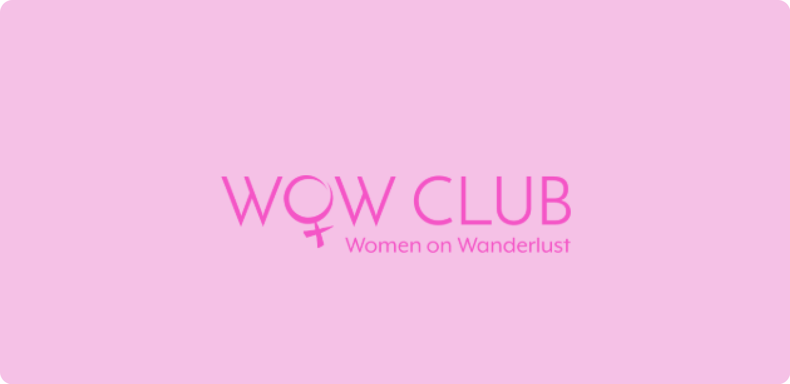
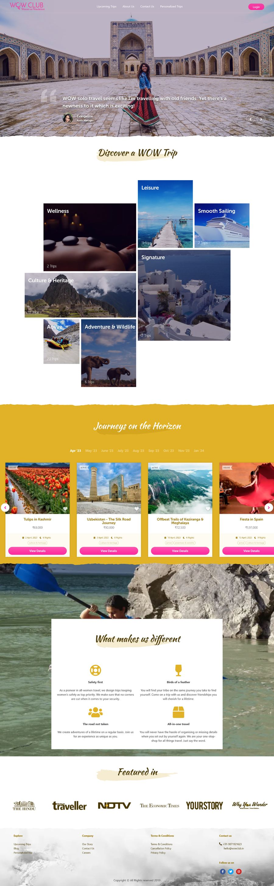
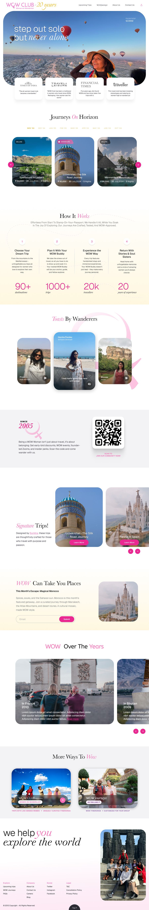

[Project genre] [Business / industry]
Wow Club
This project focused on creating a safe and welcoming travel platform for women. The platform enables women of different age groups to discover and book curated group trips, helping them explore the world with confidence, comfort, and like-minded companions.
Inspired by WOW Club (Women On Wanderlust), the experience was designed around the idea that women should be able to travel independently while still having the reassurance and safety of a group. The trips offer unique, high-quality experiences across destinations worldwide—from adventure activities and cultural events to local food, nature, and meaningful connections.
The goal was to design a space that feels trustworthy, inspiring, and easy to use, while also encouraging friendship, community, self-discovery, and memorable travel experiences.

“Design can be art. Design can be aesthetics. Design is so simple, that’s why it is so complicated.” – Paul Rand
Problem
Research
Exploration
This project was requested as a redesign/revamp of the site with a new, modern look. We explored a few different approaches and landed on this final design.


Outcome
Reflection
Skills I learned or stretched
- [new skill]
- [tool used]
- [method tried]